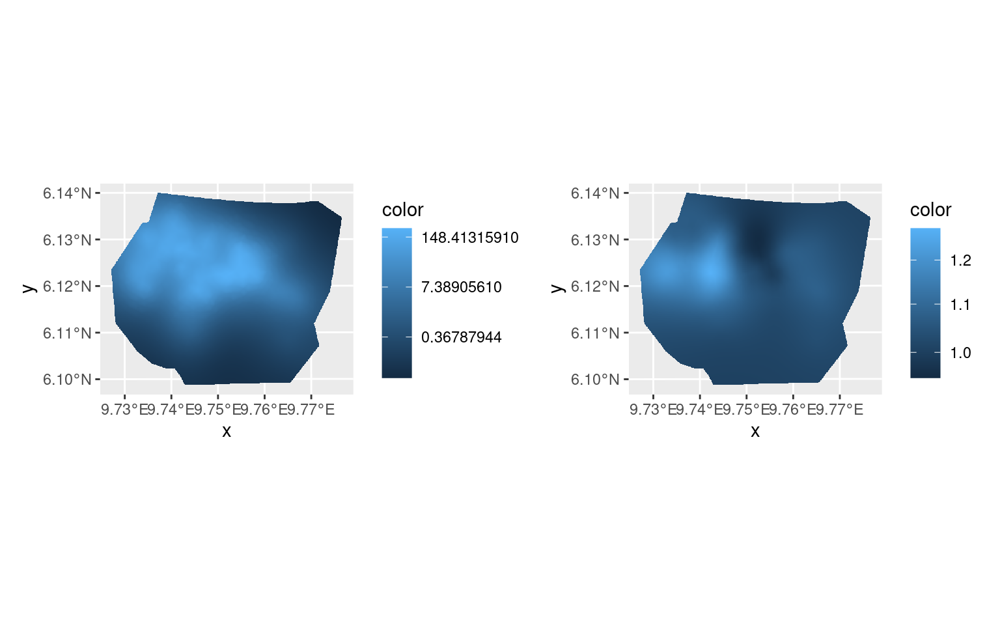
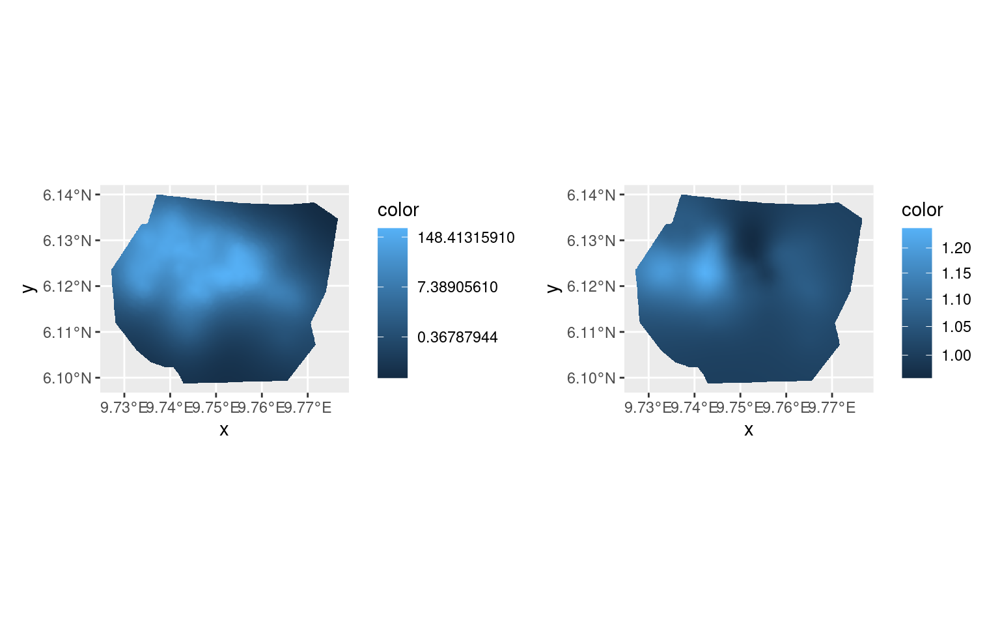
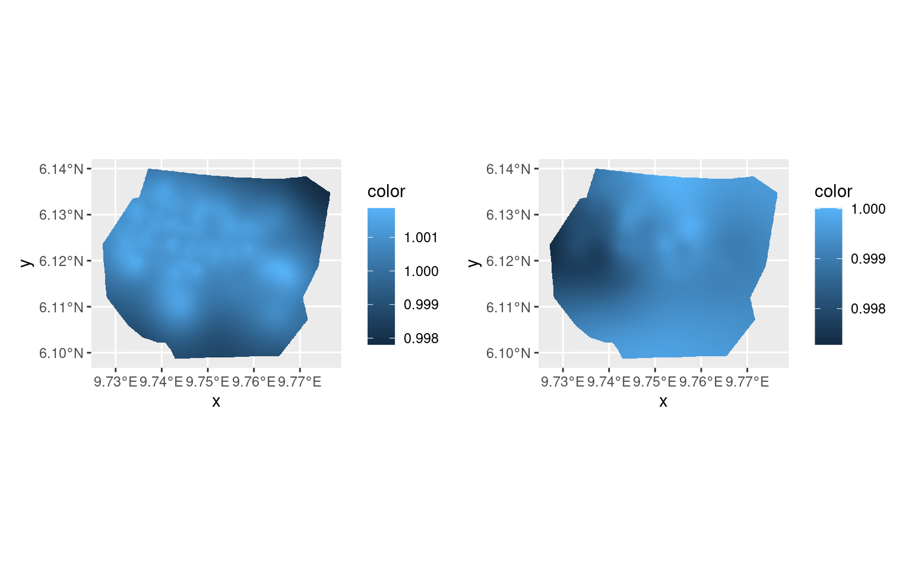

LGCPs - Multiple Likelihoods
Fabian E. Bachl
Generated on 2023-08-31
Source:vignettes/articles/2d_lgcp_multilikelihood.Rmd
2d_lgcp_multilikelihood.RmdIntroduction
For this vignette we are going to be working with the inlabru’s
´gorillas´ dataset which was originally obtained from the R
package spatstat. The data set contains two types of
gorillas nests which are marked as either major or minor. We will set up
a multi-likelihood model for these nests which creates two spatial LGCPs
that share a common intercept but have employ different spatial
smoothers.
Get the data
For the next few practicals we are going to be working with a dataset
obtained from the R package spatstat, which
contains the locations of 647 gorilla nests. We load the dataset like
this:
data(gorillas, package = "inlabru")Plot the nests and visualize the group membership (major/minor) by color:
ggplot() +
gg(gorillas$mesh) +
gg(gorillas$nests, aes(color = group)) +
gg(gorillas$boundary) +
coord_fixed() +
ggtitle("Gorillas nests and group membership")
Fiting the model
First, we define all components that enter the joint model. That is, the intercept that is common to both LGCPs and the two different spatial smoothers, one for each nest group.
matern <- inla.spde2.pcmatern(gorillas$mesh,
prior.range = c(0.1, 0.01),
prior.sigma = c(1, 0.01)
)
cmp <- ~
Common(coordinates, model = matern) +
Difference(coordinates, model = matern) +
Intercept(1)Given these components we define the linear predictor for each of the
likelihoods. (Using “.” indicates a pure additive model, and one can use
include/exclude options for like() to indicate which
components are actively involved in each model.)
fml.major <- coordinates ~ Intercept + Common + Difference / 2
fml.minor <- coordinates ~ Intercept + Common - Difference / 2Setting up the Cox process likelihoods is easy in this example. Both nest types were observed within the same window:
lik_minor <- like("cp",
formula = fml.major,
data = gorillas$nests[gorillas$nests$group == "major", ],
samplers = gorillas$boundary,
domain = list(coordinates = gorillas$mesh)
)
lik_major <- like("cp",
formula = fml.minor,
data = gorillas$nests[gorillas$nests$group == "minor", ],
samplers = gorillas$boundary,
domain = list(coordinates = gorillas$mesh)
)… which we provide to the ´bru´ function.
jfit <- bru(cmp, lik_major, lik_minor,
options = list(
control.inla = list(int.strategy = "eb"),
bru_max_iter = 1
)
)
library(patchwork)
pl.major <- ggplot() +
gg(gorillas$mesh,
mask = gorillas$boundary,
col = exp(jfit$summary.random$Common$mean)
)
pl.minor <- ggplot() +
gg(gorillas$mesh,
mask = gorillas$boundary,
col = exp(jfit$summary.random$Difference$mean)
)
(pl.major + scale_fill_continuous(trans = "log")) +
(pl.minor + scale_fill_continuous(trans = "log")) &
theme(legend.position = "right")
Rerunning
Rerunning with the previous estimate as starting point sometimes improves the accuracy of the posterior distribution estimation.
jfit0 <- jfit
jfit <- bru_rerun(jfit)
library(patchwork)
pl.major <- ggplot() +
gg(gorillas$mesh,
mask = gorillas$boundary,
col = exp(jfit$summary.random$Common$mean)
)
pl.minor <- ggplot() +
gg(gorillas$mesh,
mask = gorillas$boundary,
col = exp(jfit$summary.random$Difference$mean)
)
(pl.major + scale_fill_continuous(trans = "log")) +
(pl.minor + scale_fill_continuous(trans = "log")) &
theme(legend.position = "right")
summary(jfit0)
#> inlabru version: 2.9.0.9004
#> INLA version: 23.08.26
#> Components:
#> Common: main = spde(coordinates), group = exchangeable(1L), replicate = iid(1L)
#> Difference: main = spde(coordinates), group = exchangeable(1L), replicate = iid(1L)
#> Intercept: main = linear(1), group = exchangeable(1L), replicate = iid(1L)
#> Likelihoods:
#> Family: 'cp'
#> Data class: 'SpatialPointsDataFrame'
#> Predictor: coordinates ~ Intercept + Common - Difference/2
#> Family: 'cp'
#> Data class: 'SpatialPointsDataFrame'
#> Predictor: coordinates ~ Intercept + Common + Difference/2
#> Time used:
#> Pre = 1.54, Running = 146, Post = 0.266, Total = 148
#> Fixed effects:
#> mean sd 0.025quant 0.5quant 0.975quant mode kld
#> Intercept -0.354 1.369 -3.037 -0.354 2.33 -0.354 0
#>
#> Random effects:
#> Name Model
#> Common SPDE2 model
#> Difference SPDE2 model
#>
#> Model hyperparameters:
#> mean sd 0.025quant 0.5quant 0.975quant mode
#> Range for Common 2.955 0.653 1.906 2.88 4.462 2.711
#> Stdev for Common 2.063 0.395 1.412 2.02 2.959 1.929
#> Range for Difference 2.632 3.607 0.314 1.57 11.615 0.723
#> Stdev for Difference 0.176 0.085 0.059 0.16 0.385 0.129
#>
#> Deviance Information Criterion (DIC) ...............: 590.91
#> Deviance Information Criterion (DIC, saturated) ....: NA
#> Effective number of parameters .....................: -773.38
#>
#> Watanabe-Akaike information criterion (WAIC) ...: 2709.47
#> Effective number of parameters .................: 645.18
#>
#> Marginal log-Likelihood: -1204.83
#> is computed
#> Posterior summaries for the linear predictor and the fitted values are computed
#> (Posterior marginals needs also 'control.compute=list(return.marginals.predictor=TRUE)')
summary(jfit)
#> inlabru version: 2.9.0.9004
#> INLA version: 23.08.26
#> Components:
#> Common: main = spde(coordinates), group = exchangeable(1L), replicate = iid(1L)
#> Difference: main = spde(coordinates), group = exchangeable(1L), replicate = iid(1L)
#> Intercept: main = linear(1), group = exchangeable(1L), replicate = iid(1L)
#> Likelihoods:
#> Family: 'cp'
#> Data class: 'SpatialPointsDataFrame'
#> Predictor: coordinates ~ Intercept + Common - Difference/2
#> Family: 'cp'
#> Data class: 'SpatialPointsDataFrame'
#> Predictor: coordinates ~ Intercept + Common + Difference/2
#> Time used:
#> Pre = 1.29, Running = 23.7, Post = 0.2, Total = 25.2
#> Fixed effects:
#> mean sd 0.025quant 0.5quant 0.975quant mode kld
#> Intercept -0.352 1.369 -3.035 -0.352 2.331 -0.352 0
#>
#> Random effects:
#> Name Model
#> Common SPDE2 model
#> Difference SPDE2 model
#>
#> Model hyperparameters:
#> mean sd 0.025quant 0.5quant 0.975quant mode
#> Range for Common 2.912 0.590 1.936 2.849 4.249 2.723
#> Stdev for Common 2.034 0.344 1.450 2.003 2.800 1.937
#> Range for Difference 1.778 1.498 0.370 1.353 5.746 0.834
#> Stdev for Difference 0.166 0.103 0.036 0.143 0.424 0.097
#>
#> Deviance Information Criterion (DIC) ...............: 590.52
#> Deviance Information Criterion (DIC, saturated) ....: NA
#> Effective number of parameters .....................: -773.67
#>
#> Watanabe-Akaike information criterion (WAIC) ...: 2709.18
#> Effective number of parameters .................: 645.04
#>
#> Marginal log-Likelihood: -1204.85
#> is computed
#> Posterior summaries for the linear predictor and the fitted values are computed
#> (Posterior marginals needs also 'control.compute=list(return.marginals.predictor=TRUE)')Single-likelihood version
In this particular model, we can also rewrite the problem as a single
point process over a product domain over space and group.
In versions <= 2.7.0, the integration domain has to be
numeric, so we convert the group variable to a 0/1 variable,
group_major <- group == "major".
fml.joint <- coordinates + group_major ~ Intercept + Common + (group_major - 0.5) * Difference
gorillas$nests$group_major <- gorillas$nests$group == "major"
lik_joint <- like("cp",
formula = fml.joint,
data = gorillas$nests,
samplers = gorillas$boundary,
domain = list(
coordinates = gorillas$mesh,
group_major = c(0, 1)
)
)
jfit_joint <- bru(cmp, lik_joint,
options = list(
control.inla = list(int.strategy = "eb"),
bru_max_iter = 2
)
)Plotting the ratios of exp(Common) and
exp(Difference) between the new fit and the old confirms
that the results are the same up to small numerical differences.
library(patchwork)
pl.major <- ggplot() +
gg(gorillas$mesh,
mask = gorillas$boundary,
col = exp(jfit_joint$summary.random$Common$mean -
jfit$summary.random$Common$mean)
)
pl.minor <- ggplot() +
gg(gorillas$mesh,
mask = gorillas$boundary,
col = exp(jfit_joint$summary.random$Difference$mean -
jfit$summary.random$Difference$mean)
)
(pl.major + scale_fill_continuous(trans = "log")) +
(pl.minor + scale_fill_continuous(trans = "log")) &
theme(legend.position = "right")